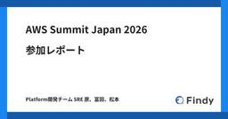
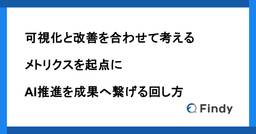

Findy Tech Blog
https://tech.findy.co.jp/
Findy Tech Blog
フィード

AWS Summit Japan 2026 参加レポート 33
33
Findy Tech Blog
こんにちは。ファインディのPlatform開発チーム（以降、SREチーム）でSREを担当している原（こうじゅん）、富田（@Cooking_ENG）、松本（@mozumasu）です。 2026年6月25日・26日に幕張メッセで開催された「AWS Summit Japan 2026」に、SREチームの3名で参加してきました。 aws.amazon.com それぞれが印象に残ったセッションを1本ずつ取り上げ、ファインディの現状と紐づけてお届けします。 スタートアップにAmazon EKSは早すぎる？ マルチプロダクト戦略を加速するPlatform Engineeringの実践 TBSテレビ「ラヴィッ…
1日前

可視化と改善を合わせて考える ― メトリクスを起点にAI推進を成果へ繋げる回し方 17
Findy Tech Blog
こんにちは。ファインディ株式会社でテックリードをしている戸田です。 先日公開したFindy AI Meetup in Fukuoka #6のイベントレポートで、「AIで開発が速くなったはずなのに、レビューが詰まってトータルの生産性が変わらなかった」という話に触れました。 tech.findy.co.jp そこで今回は、そのレビュー詰まりを題材に、数値を見る → 仮説を立てる → 改善アクションを打つ → 結果を検証する というワンサイクルを1つの実例として紹介します。 Findy Team+とFindy AI+を組み合わせて、AI導入前後の数値を可視化し、そこから仮説を立て、改善アクションを打…
2日前

ゼロから始める負荷試験環境構築 — Grafana Cloud k6とDatadogで本番トラフィックを再現する
Findy Tech Blog
こんにちは。 CTO室/Platform開発チームでSREを担当している富田(@Cooking_ENG)です。 ファインディの「Platform開発チーム」は全社横断のSREの役割を担っています。当社のサービスがどれほどの負荷に耐えられるかを把握し、性能の問題を表面化・改善することで、ユーザーに安定したサービスを提供できる状態を目指しています。 そこで、Grafana Labsが提供するGrafana Cloud k6を採用し、負荷試験環境をゼロから構築しました。今回は、Findy Conferenceを対象に負荷試験を実施しています。 Findy Conferenceは、テックカンファレンス…
14日前
Findy AI Meetup in Fukuoka #6 を開催しました — AIと共に変わるレビューの形
Findy Tech Blog
こんにちは。ファインディ株式会社でテックリードマネージャーをしている戸田です。 2026年6月17日に、Findy AI Meetup in Fukuoka #6を福岡で開催しました。当日参加くださったみなさま、ありがとうございました！ findy-inc.connpass.com 今回のテーマは「AI×レビュー AIと共に変わるレビューの形」です。 AIで開発が速くなった一方で、レビューが新たなボトルネックになりつつあります。この記事では、当日のメイン登壇「生成AI時代のレビューを再設計する」を振り返りながら、ファインディが1500以上のPRに適用してきたレビューの仕組みを紹介します。 なお…
15日前
【エンジニアの日常】これが私のご褒美ランチ！〜日々の開発を支えるおすすめの店〜 Part2
Findy Tech Blog
こんにちは、Findy AI+のエンジニアをしている山岸です。 エンジニアの毎日は、頭をフル回転させることの連続です。 難しい課題に向き合い、コードと格闘した日ほど、ランチの一皿がじんわり沁みる――。 午後のスイッチを入れ直してくれるそんな一食は、エンジニアにとってちょっとした活力源だと思っています。 前回好評だった天ぷら特集のPart1に続き、今回はPart2を執筆しました。 焼肉と唐揚げ、それぞれの「これが私のご褒美ランチ！」をお届けします！ 大阪・梅田：精肉卸問屋直営焼肉店 牛次郎 東京・五反田：話食よし おわりに ■ dan / AI+開発 ■ 普段はFindy AI+でバックエンド・…
16日前
DevinからClaude Code Actionsへ ── アカウント管理の自動化基盤を移行した判断とアーキテクチャ
Findy Tech Blog
こんにちは。ファインディのPlatform開発チーム（以降、SREチーム）でSREを担当している原（こうじゅん）です。 SREチームでは、AWSのユーザーとGitHubのアカウントの管理をTerraformで運用しています。Slackから申請が来たらTerraformのコードを書き換えてPRを出す、という作業を以前はDevinで自動化していました。 しかしDevinのアカウント利用形態が変わったことをきっかけに、この自動化基盤をClaude Code Actionsへ移行しました。同じようにAIツールでインフラ運用を自動化している方や、Claude Code Actionsの実践的な使い方を探…
17日前
Code w/ Claude Extended | Tokyo 参加レポート
Findy Tech Blog
ファインディの森（@jiskanulo）と西村（@sontixyou）です。 2026年6月11日に開催されたAnthropic主催のイベント「Code w/ Claude: Extended | Tokyo」に終日参加してきました。 claude.com 本記事はその参加レポートです。私たちがセッションを聴いてどう感じたか、セッションの内容をどう活かすかの感想も書いていきます。 Workshopで気になったセッション How we Claude Code Ship your first Managed Agent ドメインエキスパートがソフトウェアを作る What happens when …
21日前
「速く作る」から「正しく作る」へ ─ AI活用レベル3段階のロードマップ｜AI Engineering Summit Tokyo 2026 登壇レポート
Findy Tech Blog
こんにちは。 ファインディ株式会社でテックリードマネージャーをやらせてもらっている戸田です。 生成AIが開発現場に入り込んでから1年あまり。Claude CodeやGitHub Copilotなどのエージェント型ツールも一般的になってきました。 その一方で、「AIを導入したのに、思ったほど速くなっていない」「むしろレビューが大変になった」という声を、社内外でよく聞くようになりました。 そんな中で先日、弊社主催の「AI Engineering Summit Tokyo 2026」にて 「速く作る」から「正しく作る」へ ─ 生成AI時代の開発フロー改革のロードマップと実行 ─ と題して登壇してきま…
23日前
Lookerとセマンティックレイヤーで作る会話分析の運用と評価
Findy Tech Blog
はじめに こんにちは。ファインディでデータエンジニアをしている開（@hiracky16）です。 今回はLookerに搭載されている会話分析機能を使って、ユーザーがより自律的にデータ抽出や分析ができるようにした話をします。セマンティックレイヤー（Explore）を会話分析に使用する設計や開発・テスト・評価までの運用のノウハウを紹介します。 会話分析（Conversational Analytics）は、Lookerに搭載されている機能で、自然言語で質問を投げるとエージェントが裏でクエリを組み立てて実行し、表やグラフを添えて答えてくれます。たとえば「1月から5月までのXXX数をUUベースで集計でき…
25日前
コミットからPR作成までのリードタイムを26%短縮 AI活用の「定着 × 成果」の測り方
Findy Tech Blog
こんにちは。ファインディ株式会社でアプリケーションエンジニアをしている西村です。 ファインディの開発組織ではここ1年ほど、Claude Codeを使った開発プロセスのSkill化を進めてきました。Issue生成やセルフレビュー、タスク分解といった作業をSkillにして、社内のClaude Code Pluginに追加するのが日常になっています。 ただ、便利なSkillを揃えて配っただけでは、それが開発フローの中でどれだけ使われ、成果につながっているかまではわかりません。 そこで今回は、開発組織内で配布したPluginやSkillの利用データをどう集め、どう見て、どう改善に回しているか、その考え…
1ヶ月前
Lambda PDF生成を27倍高速化した話 — Puppeteerから@react-pdf/rendererへの移行レポート
Findy Tech Blog
こんにちは。Findy Freelance開発チームの久木田です。 今回は、社内で運用している支払明細書PDFの生成基盤を、Lambda + Puppeteerから@react-pdf/rendererへ全面的に移行した話を書きます。最終的に処理時間はP50（中央値）で約27倍速くなり、メモリ消費も実測で約1/4まで落とせました。 これまでのPDF生成基盤と課題 対症療法でしのいだ期間 根本対応を決めた3つの背景 技術選定: 戻れる順に試す 移行で押さえておきたい実装ポイント 設計と実装のキモ テンプレート構造 esbuildで橋渡し どう変わったか 学び これまでのPDF生成基盤と課題 現在…
1ヶ月前
Findy EventsのUIライブラリ選定 ― TamaguiからHeroUI Nativeへ乗り換えた理由と導入プロセス
Findy Tech Blog
こんにちは。Findyでモバイルアプリ開発を担当している加藤と主計です。 Findy初のモバイルアプリ「Findy Events」については、先日React Native選定の経緯と立ち上げの全体像を公開しました。 前記事ではUIライブラリ周りには深く踏み込めなかったので、今回はその続編です。UIライブラリの選定と実装パターンに絞ってお届けします。 具体的には、当初採用していたTamaguiからHeroUI Native + react-native-unistylesに乗り換えるまでの判断と、Wrapper Componentを軸にしたUI構築の進め方が中心です。 なお、本記事で題材にしてい…
1ヶ月前
【エンジニアの日常】エンジニア達の人生を変えた一冊 Part7
Findy Tech Blog
こんにちは、ファインディでFindy Toolsの開発をしている本田です。 この記事は「エンジニア達の人生を変えた一冊」として、ファインディのエンジニアが人生を変えた本を紹介していくシリーズです。 Part7では、本田・加藤・山田の3名でお届けします。アジャイル開発との出会いになった本、iOSアーキテクチャ設計の答え合わせになった本、AI時代に再読して背筋が伸びた本。3冊それぞれ切り口は違いますが、いずれも自分の中の「開発の判断軸」を作り直してくれた一冊です。 それでは、さっそく紹介していきましょう。 RailsによるアジャイルWebアプリケーション開発 第4版 この本を読んだきっかけ 本の内…
1ヶ月前
AI-DLCをClaude Skill化して「エンジニアの役割越境」を実現した話
Findy Tech Blog
はじめに こんにちは！ファインディのTeam+開発部でエンジニアをしている澁谷（TENTEN11055）です。 普段はチームで Findy Context というプロダクトの開発に取り組んでいます。 prtimes.jp 2025年11月、AWS主催のAI-DLC Unicorn Gymに参加し、AI駆動開発の手法であるAI-DLCを実践しました。 学びはとても大きかった一方で、自分たちのチームにそのまま持ち込むには壁もあり、現場の実態に合わせて作り変える必要がありました。 Unicorn Gym参加時の様子はこちら。 tech.findy.co.jp AI-DLCはAIが作業を実行し、人間が…
1ヶ月前
Dev-Bizの壁を、可視化で越える — DevOpsDays Tokyo 2026 参加・登壇レポート
Findy Tech Blog
こんにちは、ファインディのCTO室でスタッフエンジニアを担当している及川(@rojoudotcom)です。 4月14日(火)〜16日(木)にDevOpsDays Tokyo 2026が開催されました。本記事は、スポンサー登壇者として参加してきたレポートです。 DevOpsDaysは、世界各地で開催されるエンジニア向けの国際カンファレンスです。 開発（Dev）と運用（Ops）の連携、自動化、組織文化、最新の事例やプラクティスを発表しています。日本ではDevOpsDays Tokyoとして、年に1回開かれています。 本記事では、開発組織の成果を経営層にどう伝えたらいいのかを悩まれている方や、AIを…
1ヶ月前
【ソフトウェア開発現代史】継続的デリバリーができない組織でAIは増幅器(amplifier)として空回りを生む 〜Dave Farley氏の来日に寄せて〜
Findy Tech Blog
ソフトウェア開発現代史年表Ver2.08 はじめに デリバリーは速ければよいのか 改めて、Four Keysは何を測っているのか 「デプロイ」と「リリース」の混同がFour Keysを遠ざける Dave Farley氏とは 『Continuous Delivery』(2010) は何を変えたか 二つの意味を持つ「リリース」 AI時代に、継続的デリバリーはなぜ重要になるのか AI駆動開発を空回りさせないために 【告知】AI DevEx Conference 2026 - Future of Development Productivity - おわりに はじめに こんにちは。テックブログ編集長の…
1ヶ月前
TSKaigi 2026に協賛・参加しました 〜TypeScriptエコシステムのNative化を感じた注目セッション〜
Findy Tech Blog
先日、ファインディはベルサール羽田空港で開催された「TSKaigi 2026」に協賛しました。今回はDevRelメンバーとフロントエンドエンジニア3名で参加し、ブース運営を行いました。本記事ではTSKaigi 2026において印象深かったセッションの紹介や登壇、ブース出展などの活動内容を紹介します。ブースで実施したユーティリティ型アンケートの集計結果（480票）も後半で公開していますので、ぜひ最後までお読みください。
1ヶ月前
経験1年のエンジニアでも、新規プロダクトのEmbedded SREに初挑戦できた理由 — 仕組みと個人の学習で踏み出す
Findy Tech Blog
経験1年のエンジニアでも、新規プロダクトのEmbedded SREに初挑戦できた理由 — 仕組みと個人の学習で踏み出す
1ヶ月前
プロパティの順序で型推論が壊れる!? TypeScript6.0の修正からContext-Sensitivityの仕組みを追う
Findy Tech Blog
こんにちは。ファインディでフロントエンドエンジニアをしている大石（@bicstone）です。 2026年5月22日〜23日に開催されるTSKaigi 2026で、「プロパティの順序で型推論が壊れる!? TS6.0の修正からContext-Sensitivityの仕組みを追う」というタイトルで登壇します。本記事は10分のトーク内では時間の都合で端折った内容も含めた拡張版としてお届けします。 2026.tskaigi.org TypeScriptでオブジェクトリテラルにメソッドを書いたとき、プロパティの記述順序を入れ替えただけで型推論の結果が変わるとしたら、どう感じるでしょうか。「そんな不思議な挙…
1ヶ月前
イベント「事業成長に効かせるファインディ流データエンジニアリングの実践」開催レポート
Findy Tech Blog
こんにちは。ファインディ株式会社でデータエンジニアをしている開です。 2026年4月28日（火）に、データソリューションチーム主催の採用イベント「事業成長に効かせるファインディ流データエンジニアリングの実践」を開催しました。 findy-inc.connpass.com この記事では、イベントを企画した背景と当日の3本のセッションを参加できなかった方にもイメージが伝わるようにまとめます。 イベント開催の背景 セッション1: ファインディの事業拡大を支える拡張可能なデータ基盤へのリアーキテクチャ セッション2: データモデリングを通して管理会計のオペレーションを再設計 セッション3: 社内で使わ…
2ヶ月前
コーディングをAIに任せても、エンジニアの仕事は減らなかった ― ほぼ一人で1か月、AI機能をリリースしてみて
Findy Tech Blog
こんにちは、ファインディでFindy Toolsの開発をしている本田です。 このたび、Findy Toolsの新機能として「アーキテクチャAI」をリリースしました。要件を入力するとAWSのアーキテクチャ図と設計の提案が生成される機能です。 findy.co.jp 今回の開発では、PM・仕様策定・スコープ定義・インフラ・FE/BE開発・テストまで、ほぼ一人で1か月で担当しました。そして、コーディングはほとんどClaude Codeに任せ、私自身はほぼコードを書いていません。 この記事では、そんな開発を進めるなかで分かったこと、難しかったこと、そして改めて実感したエンジニアの仕事について紹介します…
2ヶ月前
RubyKaigi 2026で発表されたSpinelを触ってわかった「コンパイルが通っても動いているとは限らない」話
Findy Tech Blog
こんにちは。プロダクト開発部の森 @jiskanulo です。 2026年4月22日から24日までRubyKaigi 2026 Hakodateが開催されました。 rubykaigi.org 函館アリーナを3日間に渡って貸し切る大規模イベントの運営をしていただきましたスタッフの皆様に感謝を申し上げます。 ファインディ株式会社もPlatinumスポンサーとして協賛しました。 私もブースに立って出展やファインディ各サービスのご案内をさせていただきました。 お話しをしていただいた皆様にも重ねて感謝申し上げます。 ブースに立つ合間にセッションを聞いて自分でやれそうなことに思いを馳せたり、他社様のブース…
2ヶ月前
PluginをCIから呼び出す：Claude Code Pluginの一歩先の使い方
Findy Tech Blog
こんにちは。 ファインディ株式会社でテックリードマネージャーをやらせてもらっている戸田です。 Claude CodeのPluginを使うと、社内で育てたSkillやAgentを、組織のメンバーにまとめて配布できるようになります。ファインディでも、この仕組みでセルフレビュー用のSkillを開発組織全体に配り、各自がPull request作成前に呼び出す形で活用してきました。 この記事では、そこからさらに一歩踏み込んだ使い方として、PluginをGitHub Actionsから呼び出してCIで動かす取り組みを紹介します。具体的には、Pluginに含まれるセルフレビューSkillをCIから定期実行…
2ヶ月前
RubyKaigi 2026 Day1 - 『Exploring RuboCop with MCP』を現地で聞いてきた
Findy Tech Blog
はじめに こんにちは。プロダクト開発部 転職開発チームでエンジニアリングマネージャーをしている松村(@shakemurasan)です。 2026-04-22(水)から2026-04-24(金)までの3日間開催されているRubyKaigi 2026に現地参加しています。 rubykaigi.org この記事は、Day1 13:00-13:30のkoicさんのセッション『Exploring RuboCop with MCP』について、事前準備編と当日編（セッション当日に残したメモと感想）を1本にまとめたものです。 事前準備編にはAIによる予想が含まれるため、実際のセッション内容と一致するとは限らな…
2ヶ月前
Findy初のモバイルアプリ開発におけるReact Nativeのリアル 〜技術選定の裏側と実践的OSS活用〜
Findy Tech Blog
こんにちは。ファインディ株式会社でモバイルエンジニアをしている加藤です。 先日、「React Native Lunch Talk ～いま選ばれる理由とアプリの現在地～」にて、「新規サービス開発におけるReact Nativeのリアル〜技術選定の裏側と実践的OSS活用〜」というテーマで登壇しました。 本記事は、その発表内容を改めてテックブログとして書き起こしたものです。 発表では時間の都合で駆け足になった部分や、質疑応答で答えきれなかった論点もあったため、本記事ではそのあたりも含めて踏み込んで書いています。 背景：Findy Events β版の開発 前回の記事 でも少し触れましたが、昨年、Fi…
2ヶ月前
AI活用を推進するためにファインディが下した、1つの小さな決断
Findy Tech Blog
こんにちは。 ファインディ株式会社でテックリードマネージャーをやらせてもらっている戸田です。 「AI活用を推進したいが、思うように進まない」──この悩みを抱えているエンジニアの方は、少なくないのではないでしょうか。 ファインディも例外ではありませんでした。2025年の上半期までは、普段の業務をやりつつ片手間でAIのキャッチアップや社内展開を進めていました。 今回は、そこから潮目が変わるきっかけとなった決断と、その後1人あたりのプルリクエスト作成数が前年比で約1.5倍になるまでの過程を紹介します。 同じようにAI活用の推進に手応えのなさを感じている方の参考になれば幸いです。 片手間で追いかける限…
2ヶ月前
登壇スライドを30分で作る：Claude Codeで壁打ちからGoogle Slides生成までワークフロー化
Findy Tech Blog
こんにちは。ファインディ株式会社でテックリードマネージャーをやらせてもらってる戸田です。 ファインディではClaude CodeのスキルやカスタムコマンドなどをPlugins経由で社内展開しています。 tech.findy.co.jp コードレビューやタスク分解といった開発業務の効率化が進む一方で、登壇準備はまだ手作業の割合が大きい領域です。話す内容を固めて、構成を考えて、スライドに落とし込んで、デザインを整えて……。発表の本質は「何を伝えるか」なのに、準備工程に時間を奪われがちです。 本記事では、この課題に対処するために社内Pluginsに作った登壇スライド生成スキルを紹介します。壁打ちによ…
2ヶ月前
Findy AI Meetup in Fukuoka #5 を開催しました — AI時代のエンジニア育成
Findy Tech Blog
こんにちは。ファインディ株式会社でテックリードマネージャーをしている戸田です。 2026年4月15日に、Findy AI Meetup in Fukuoka #5を福岡で開催しました。 今回のテーマは「AI×育成 AI時代のエンジニア育成」です。 この記事では、当日の登壇内容を振り返りながら、生成AI時代におけるエンジニア育成で私たちが直面した課題と、そこから見えてきた「変わらない大切なこと」を紹介します。 https://findy-inc.connpass.com/event/383906/findy-inc.connpass.com 当日参加くださったみなさま、ありがとうございました！ …
3ヶ月前
フロー効率よりAIのポテンシャルを！開発プロセスを「個人アサイン」にシフトした理由
Findy Tech Blog
こんにちは！ファインディでプロダクト開発部のVPoEをしている浜田です。 AI駆動開発が浸透するなかで、エンジニア1人あたりの開発能力は大きく向上しています。しかし、従来のチーム単位のアサイン方式のままでは、そのポテンシャルを十分に引き出せていないと感じていました。 この記事では、私たちが開発プロセスを「チーム単位」から「個人単位」のアサインへ移行した背景と、その結果得られた変化について紹介します。AI駆動開発を取り入れたものの、チームの開発プロセスをどう変えるべきか悩んでいる方に向けた内容です。 これまでの開発プロセス AI駆動開発で見えてきた課題 個人アサイン方式への移行 個人のオーナーシ…
3ヶ月前